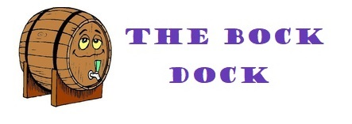

<mat-toolbar color="accent">
  <nav>
    <a [routerLink]="['/home']" routerLinkActive="activebutton">
      
    </a>
  </nav>
  <span class="example-spacer"></span>
  <button mat-icon-button class="example-icon" aria-label="Share a snapshot" color="primary">
    <mat-icon>share</mat-icon>
  </button>
  <button mat-icon-button class="example-icon" aria-label="Settings" color="primary">
    <mat-icon>settings</mat-icon>
  </button>
</mat-toolbar>
  
  <!-- Copyright 2020 Google LLC. All Rights Reserved.
      Use of this source code is governed by an MIT-style license that
      can be found in the LICENSE file at http://angular.io/license -->